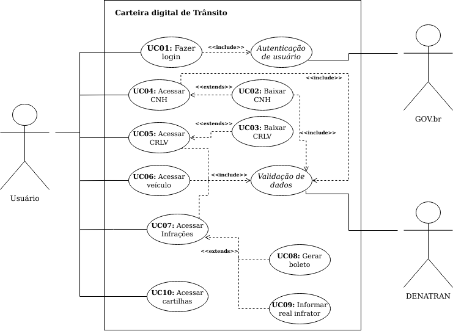

Casos de Uso
1. Introdução
Um documento de caso de uso é uma técnica que descreve como o usuário realizará uma determinada tarefa dentro do contexto de um software. Ele descreve o ponto de vista do usuário e como o sistema responde a partir de suas ações, cada caso de uso é uma sequência de passos que são descritos a partir de fluxos, que começam com um objetivo principal e terminam quando esse objetivo está realizado.
Os casos de uso são a próxima etapa no processo de design, depois de ter a lista completa dos requisitos. Os casos de uso integram os requisitos em um pacote abrangente que descreve a interação do usuário com o sistema. Eles começam onde o processo de coleta de requisitos termina. Os requisitos determinam quais Casos de Uso o sistema terá, e muitos dos requisitos se tornarão sua lógica de negócios.
2. Metodologia
Para definir e criar os diagramas de caso de uso, fizemos uso dos principais cenários da aplicação, já existentes no projeto. Além disso, para conseguirmos descrever com detalhes os fluxos principais alternativos e de exceção dos casos de uso, executamos experimentalmente esses fluxos dentro da aplicação e tomamos nota de cada passo dentro do fluxo referente ao caso de uso
3. Diagrama de Casos de Uso
O diagrama foi desenvolvido utilizando a ferramenta Draw.io e pode ser acessado por aqui.

Link para a imagem expandida
{kind=link}
4. Especificação dos Casos de Uso
UC01 - Fazer o login
| UC01 | Descrição |
|---|---|
| Descrição | Logar no sistema. |
| Ator | Usuário |
| Pré-condições | Acesso à internet e cadastro no sistema GOV.br |
| Ação | Entrar no app e ser capaz de acessar todas as opções dele |
| Fluxo Principal | FP01 Fluxo de quando o ator faz o login no app 1. o ator clica em "Entrar com gov.br" 2. O sistema exibe a página de login do gov.br 3. O ator insere seus dados cadastrais para acessar a conta do gov.br 4. O ator é redirecionado para o menu principal do app. |
| Fluxo Alternativo | FA01 Fluxo de quando o usuário deseja fazer o login quando ainda não é cadastrado 1. o ator clica em "Entrar com gov.br" 2. O sistema exibe a página de login do gov.br 3. O ator clica no botão "Criar sua conta" 4. O ator insere seus dados para criação da conta do gov.br 5. O ator é redirecionado para o menu principal do app. |
| Fluxo de Exceção | FE01 Fluxo de quando o usuário não completa os campos para logar no sistema 1. o ator clica em "Entrar com gov.br" 2. O sistema exibe a página de login do gov.br 3. O ator preenche o campo "Número do CPF" 4. O ator não preenche o campo "Senha" 5. O sistema exibe uma mensagem de erro alertando sobre a necessidade de preencher tal campo |
| Pós-condições | O ator terá logado no sistema |
| Rastreabilidade | RF1, RF8 |
UC02 - Baixar CNH
| UC02 | Descrição |
|---|---|
| Descrição | O usuário cadastra a CNH. |
| Ator | Usuário |
| Pré-condições | Acesso à internet , estar logado no app |
| Ação | O usuário cadastra o documento CNH no aplicativo |
| Fluxo Principal | FP01 Fluxo de quando o ator deseja baixar a CNH no app 1. O ator clica na opção "Habilitação" 2. O app exibe a tela de opções para a habilitação 3. O ator clica na opção “Toque aqui para adicionar a sua CNH” 4. O sistema exibe a tela de opções de validação da CNH 5. O ator escolhe a opção “Validação pelo celular" 6. O sistema exibe a tela com instruções para fazer a validação pelo celular 7. O ator clica no botão "Vamos Começar" 8. O app exibe a tela para escanear o QR Code contido dentro da CNH 9. O ator escaneia o QR Code 10. O sistema exibe a tela com instruções para validação por biometria facial 11. O ator clica no botão "Avançar" 12. O app exibe a tela para validação por biometria facial com instruções para executar com sucesso 13. O usuário segue as recomendações e faz a validação 14. O app exibe a tela para informar o CEP do endereço informado de quando a CNH foi emitida 15. o ator preenche o campo "CEP" e clica no botão "Validar" 16. O sistema exibe a tela para fornecer o número do telefone do usuário para concluir a validação 17. O ator preenche o campo "Telefone com DD" e clica no botão "Concluir" 18. O sistema exibe a tela para criar uma chave para acessar todos os documentos cadastrados 19. O ator preenche os campos para cadastrar a chave e clica no botão "Cadastrar" 20. O sistema exibe um pop up perguntando se deseja utilizar o leitor biométrico do aparelho para acessar os documentos 21. O ator clica no botão "Sim" 22. O sistema exibe a parte frontal, traseira e interna da CNH |
| Fluxo Alternativo | FA01 Fluxo de quando o ator possui o Certificado Digital e deseja baixar a CNH com ele 1. O ator clica na opção "Habilitação" 2. O app exibe a tela de opções para a habilitação 3. O ator clica na opção “Toque aqui para adicionar a sua CNH” 4. O sistema exibe a tela de opções de validação da CNH 5. O ator escolhe a opção “com certificado Digital" 6. O sistema exibe a tela para preencher o campo do código de validação enviado pelo Portal de Serviços do DENATRAN 7. O ator preenche o campo com o código de validação 8. O sistema exibe a tela para criar uma chave para acessar todos os documentos cadastrados 9. O ator preenche os campos para cadastrar a chave e clica no botão "Cadastrar" 10. O sistema exibe um pop up perguntando se deseja utilizar o leitor biométrico do aparelho para acessar os documentos 11. O ator clica no botão "Sim" 12. O sistema exibe a parte frontal, traseira e interna da CNH |
| Fluxo de Exceção | FE01 Fluxo de quando o ator não tem a CNH em mãos 1. O ator clica na opção "Habilitação" 2. O app exibe a tela de opções para a habilitação 3. O ator clica na opção “Toque aqui para adicionar a sua CNH” 4. O sistema exibe a tela de opções de validação da CNH 5. O ator escolhe a opção “Validação pelo celular" 6. O sistema exibe a tela com instruções para fazer a validação pelo celular 7. O ator clica no botão "Vamos Começar" 8. O app exibe a tela para escanear o QR Code contido dentro da CNH 9. O ator não consegue prosseguir pois não tem o QR Code da CNH para escanear |
| Pós-condições | O ator poderá acessar sua CNH dentro do app sempre que desejar |
| Rastreabilidade | RF3, RF10, RF19 |
UC03 - Baixar CRLV
| UC03 | Descrição |
|---|---|
| Descrição | Baixar o documento de CRLV para deixa-lo disponível no app. |
| Ator | Usuário |
| Pré-condições | Estar logado no CDT |
| Fluxo Principal | FP01 Fluxo de quando o usuário deseja baixar os CRLV de veículos 1. Usuário seleciona a opção "Veículos" 2. Usuário seleciona a opção "Toque para adicionar um CRLV" 3. Usuário informa o número do RENAVAM 4. Usuário informa o númeor de segurnaça do CRV 5. Usuário seleciona a opção "Adicionar" 6. Usuário cadastra uma chave de acesso 7. Usuário seleciona sim o não para biometria em dispositivos compatíveis |
| Fluxo Alternativo | -- |
| Fluxo de Exceção | FE01 Fluxo de quando o usuário não tem os número do RENAVAM ou CRV 1. Usuário seleciona a opção "Veículos"; 2. Usuário seleciona a opção "Toque para adicionar um CRLV" 3. O Usuário não consegue prosseguir pois não tem o Número do RENAVAM ou CRV |
| Pós-condições | O usuário poderá acessar seus CRLV dentro do app sempre que desejar |
| Rastreabilidade | RF4, RF5, RF10, RF13, RF15 |
UC04 - Acessar CNH
| UC04 | Descrição |
|---|---|
| Descrição | O usuário acessar a CNH. |
| Ator | Usuário |
| Pré-condições | Estar logado no CDT, ter habilitação cadastrada. |
| Fluxo Principal | FP01 Fluxo de quando o usuário deseja visualizar a CNH 1. Usuário seleciona a opção "Habilitação" na tela inicial 2. O sistema exibe a parte frontal, traseira e interna da CNH |
| Fluxo Alternativo | FA01 Fluxo de quando o usuário deseja visualizar a CHN e não fez o cadastro da chave de acesso 1. Usuário seleciona a opção "Habilitação" na tela inicial 2. O sistema exibe a tela para criar uma chave para acessar todos os documentos cadastrados 3. O ator preenche os campos para cadastrar a chave e clica no botão "Cadastrar" 4. O sistema exibe um pop up perguntando se deseja utilizar o leitor biométrico do aparelho para acessar os documentos 5. O ator clica no botão "Sim" 7. O sistema exibe a parte frontal, traseira e interna da CNH |
| Fluxo de Exceção | FE01 Sem acesso a internet 1. O usuário seleciona a opção "Habilitação" na tela inicial 2. O app mostra uma mensagem de falha de conexão |
| Pós-condições | O ator poderá visualizar sua CNH |
| Rastreabilidade | RF3, RF10, RF19 |
UC05 - Acessar CRLV
| UC05 | Descrição |
|---|---|
| Descrição | O usuário acessar o CRLV. |
| Ator | Usuário |
| Pré-condições | Estar logado no CDT, ter CRLV baixado no app |
| Fluxo Principal | FP01 Fluxo de quando o usuário deseja acessar o CRLV 1. Usuário seleciona a opção "Veículos" 2. Usuário digitar a chave de acesso ou insere a digital 3. Usuário seleciona o veículo que quer consultar o CRLV. |
| Fluxo Alternativo | -- |
| Fluxo de Exceção | -- |
| Pós-condições | O usuário poderá visualizar o CRLV do veículo escolhido |
| Rastreabilidade | RF4, RF5, RF13, RF15 |
UC06 - Acessar Veículo
| UC06 | Descrição |
|---|---|
| Descrição | O usuário acessar todas as informações de um veículo. |
| Ator | Usuário |
| Pré-condições | Estar logado no CDT, ter CRLV baixado no app |
| Fluxo Principal | FP01 Fluxo de quando o usuário deseja acessar todos as informaçẽos de um veículo 1. Usuário seleciona a opção "Veículos" 2. Usuário digitar a chave de acesso ou insere a digital 3. Usuário localiza o veículo 4. Usuário seleciona o veículo - O sistema disponibiliza quatro telas com as informações do veículo; |
| Fluxo Alternativo | FA01 Fluxo de quando o usuário deseja acessar o RECALL de um veículo 1. Usuário seleciona a opção "Veículos" 2. Usuário digitar a chave de acesso ou insere a digital 3. Usuário localiza o veículo que possui Recall 3. Usuário seleciona o veículo 4. Usuário desliza a tela pra a esquerda quatro vezes 5. Usuário seleciona a opção "Sim, toque para detalhar" |
| Fluxo de Exceção | -- |
| Pós-condições | O usuário poderá visualizar todas as informações do veículo escolhido |
| Rastreabilidade | RF4, RF5, RF10, RF13, RF15 |
UC07 - Acessar Infrações
| UC07 | Descrição |
|---|---|
| Descrição | O usuário acessar suas infrações. |
| Ator | Usuário |
| Pré-condições | Estar logado no CDT |
| Fluxo Principal | FP01 Fluxo de quando o usuário deseja acessar as infrações por infrator 1. Usuário seleciona a opção "Infrações"; 2. Usuário seleciona a opção "Por Infrator" |
| Fluxo Alternativo | FA01 Fluxo de quando o usuário deseja acessar as infrações por veículos 1. Usuário seleciona a opção "Infrações"; 2. Usuário seleciona a opção "Por Veículo" |
| Fluxo de Exceção | -- |
| Pós-condições | O usuário poderá visualizar as infrações |
| Rastreabilidade | RF2, RF7, RF15 |
UC08 - Gerar Boleto
| UC08 | Descrição |
|---|---|
| Descrição | O usuário gerar boleto para pagamento de infrações. |
| Ator | Usuário |
| Pré-condições | Estar logado no CDT |
| Fluxo Principal | FP01 Fluxo de quando o usuário deseja gerar boleto por infrator 1. Usuário seleciona a opção "Infrações" na tela inicial 2. Usuário seleciona a opção "Por Infrator" 3. Usuário seleciona a infração 4. Usuário seleciona a opção "Solicitar Boleto" |
| Fluxo Alternativo | FA01 Fluxo de quando o usuário deseja gerar boleto por veículos 1. Usuário seleciona a opção "Infrações" na tela inicial 2. Usuário seleciona a opção "Por Veículo" 3. Usuário seleciona a infração 4. Usuário seleciona a opção "Solicitar Boleto" |
| Fluxo de Exceção | -- |
| Pós-condições | Usuário poderá baixar um pdf do boleto de pagamento |
| Rastreabilidade | RF7, RF15, RF17 |
UC09 - Informar Real Infrator
| UC09 | Descrição |
|---|---|
| Descrição | O usuário informar quem realmente cometeu uma infração. |
| Ator | Usuário |
| Pré-condições | Estar logado no CDT |
| Fluxo Principal | FP01 Fluxo de quando o usuário deseja informar o real infrator 1. Usuário seleciona a opção "Infrações" 2. Usuário seleciona a opção "Por Veículo" 3. Usuário seleciona a infração 4. Usuário seleciona a opção "Informar real infrator" |
| Fluxo Alternativo | -- |
| Fluxo de Exceção | -- |
| Pós-condições | O usuário terá identificado quem realmente cometeu a infração com seu veículo. |
| Rastreabilidade | RF20 |
UC10 - Acessar Cartilhas
| UC10 | Descrição |
|---|---|
| Descrição | O usuário acessar as cartilhas de campanhas educativas. |
| Ator | Usuário |
| Pré-condições | Estar logado no CDT |
| Fluxo Principal | FP01 1. Usuário seleciona a opção "Educação" na tela inicial. |
| Fluxo Alternativo | -- |
| Fluxo de Exceção | -- |
| Pós-condições | O usuário terá acesso a todas as cartilhas de capanhas educativas vigente no momento |
| Rastreabilidade | RF12, RF25 |
5. Bibliografia
- UML Use Case Diagrams. uml-diagrams. Disponívem em: https://www.uml-diagrams.org/use-case-diagrams.html. Acesso em: 30/04/2021.
- WHITNEY, Ellen - Introduction to Gathering Requirements and Creating Use Cases. Disponível em: https://www.codemag.com/article/0102061/Introduction-to-Gathering-Requirements-and-Creating-Use-Cases. Acesso em: 18 Março 2021.
- REINEHR, Sheila - Engenharia de Requisitos.
6. Versionamento
| Versão | Data | Modificação | Autor |
|---|---|---|---|
| 0.1 | 18/03/2021 | Criação dos tópicos do documento | Emily Dias |
| 0.2 | 19/03/2021 | Adição de algumas UCs no documento | Emily Dias |
| 0.3 | 20/03/2021 | Adição de um parágrafo na Introdução e bibliografia | Estevao Reis |
| 0.4 | 20/03/2021 | Adição de Fluxos | Estevao Reis |
| 0.5 | 20/03/2021 | Adição do diagrama | Emily Dias |
| 0.6 | 22/03/2021 | Correção de erros ortográficos | Estevao Reis |
| 1.0 | 22/03/2021 | Adição da Metodologia | Estevao Reis |
| 2.0 | 30/04/2021 | Refatoração do documento | Daniel Porto |
| 1.1 | 02/05/2021 | Ajuste de documento | Emily Dias |